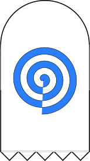

Two children were born star crossed into houses of meager means. Both were raised with love -- an awkward knock-kneed love of circumstance and squalor that bumps and bruises the psyche despite it's gentleness. Their minds, keen and clever, made them the pride and terror of their parents. They met for the first time in strollers on the streets outside their town, neither would come to remember this. In four more years their minds finally greeted each other on the second day of kindergarten. Blocks, then talks, some bulling, and some chalk. They jockeyed for position and eventually the others attention. They chose to collaboration over obliteration. The pairs friendship through adolescence crashed violently into their puberty. Stolen wine, secluded pines, a hot mess, and a loving caress, welded together with a rarefied love which most are too unlucky to acquire. Passion and playfulness punctuated their pre-teens, both found work outside of school, and one another outside of daylight. All seemed bright; small bubbles of luck emerged from the stew of their youth as they clamored and fought to outgrow their lot in life. "Wait and see" says the wise man to any turn of luck -- their sharp minds, tongue and motes of success caught the jealous eye of some small sad local sods. "I'm sure he thinks he's so much better than us, and his little bitch too" wined the pathetic wallflowers of life that lined their town. "I bet we could take him down a peg at the dance after the harvest fair". The thugs made good in their plot, and as fools do got caught in the emotion of their acts. A prank to push our protagonist off a pier turned perilous. First plummeting, then impalement, and a long slow silent sink to the sand below. She witnessed half soaked, hidden in the reeds, his body stiffen, then sink limp, all promise lost in the black hole bath of cold water and bitter acts. Her heart broke as his stopped and she uttered a curse on the brutes. "May hell find you in your lives so long as I can will it". Nature, shaken awake by the force of the spell felt bemused and perverse after it's long sleep. In a moment of queer behavior it reached out and caught the boys soul before it left his body.
A knock at the window.
Am I hearing things now she thought. It didn't happen again. Reaching down beside her bed she missed her target of nights half finished Heineken and clumsily smeared three fingers into her ash bowl. Fuck, if it wasn't enough that her will was failing every little fault was an injury of emotion. The miss was enough to give up on the drink for at least five minutes. Sliding onto her back without dragging her hand on the sheets she let out a sigh at the ceiling. "Fuck Everyone", it echoed in the smallest way off the walls. She thought about how thin how thin the walls were and the lack of insulation. It was like a drum pulled tight with rawhide begging to bleed reverberated sound. She heard her mother roll over in the room next door and felt a shot of guilt. Exhaling deeply she retreated back in, saying the words didn't help and she didn't want to hurt anyone. Sometimes the lines between embarrassment, shame and pain, felt thinner than her walls. She was aware enough to know her depression belonged where it was, feeling anything less would trivialize the last few months, but she was getting board with herself and bored with her sadness. Another deep exhale crossed her lips. Her diaphragm contracted and the air pushed, slowly, across her lips, wicking little bits of moisture into the air, they wisped around invisibly, rising away from her into the air of her room, swirling and mixing with the sealed in atmosphere, phasing in and out of vapor, wafting it's way deliberately towards the window. On the pane it cooled, condensates, then collected. collected, just a drop. Suddenly, with a wild motion so foreign to physical constraints that god herself would have blushed, the drop of watered, un-dropped, jumping horizontally outward like confused rain, somehow unconcerned with how gravity thought it should act it reversed itself in a beautiful pattern of concentric ripples and fell back towards the glass.
A knock at the window.
This time it deserved a look. First though... another hunt for her beer, this time the motivation to roll onto her belly found her and she lifted the bottle to her eye level glared with predator like focus at her kill. Mostly bottom beer. Mother milk she thought, and slaughtered the last of it before creaking upwards shakily on the ice cold floor. She tried not to glance in the mirror on the way to the window but falling victim to habit caught a glimpse. Pain. Dropping all her sports might have been an error, though soccer just felt like kicking a ball around now. That sort of thinking was just insult to injury. That piece of glass was going in the garbage before noon. Approaching the window she saw the droplet puddling midway up the pane. Odd, is water supposed to do that, she glanced back at the beer bottles and the ashed weed then back at the disobedient water. Methinks somethings wrong about you. She poked her finger into the water half expecting it to disappear like a mirage in the glass. Instead it crawled upon her, slithering weakly up her finger. Her parasympathetic nervous system fired, a few months of abuse did little to temper a vigours youthful fight or flight response. SNAP! she whipped her wrist sending every molecule of H20 hurdling back at the single pane glass.
A knock at the window.
Hahaha holy fucking shit what kind of cursed bullshit was that, she giggled and slowly calmed herself down. She sat back and swallowed hard questioning the validity of her experience. If it were to happen again she thought it would make my insanity a little less likely. I'm not sure this is the best phenomenon to interpret straight though. She took some delectate steps back to the edge of her bed and with the care of a new mother cleaning a newborn packed herself a fresh bowl. At least its the weekend. It would be hard to excuse herself of the indulgence before playing hooky. She mused over her pipe without taking her eyes off the water, it was shimmering, but did that mean it was still moving. With a healthy cough she moved back to the window, looking outside this time at her disheveled front yard. Fuck, well at least it's not just me not pulling my weight lately. She remembered how the two of them had organized the front yard just to make the point that they could. She kneeled down leveled her green, and now reddening eye close to the water. Maybe it was just some kind of fungal slime. Her cleaning schedule had been really off track late- and it again decided to jump. This time directly into her right eye.
A knock at her mind.
Most of the water on planet earth has been there a long time, sometimes it changes state, sometimes it binds to other chemicals, but for the most part every drop of water drank has a history as old as the earth. She became aware of this acutely as the water told her it's history. Rainfall, tumbling down a river, chilling in a lake, inside a fish, outside a fish, back up in the atmosphere, down again, in the ocean, in a glade, by a pier, in a mouth, her lovers mouth, her lovers lungs, a cough, and back again, a final breath, then resting in her lovers breast. She fell on her ass, mouth open eyes erupting in tears her mind torn between the safety of her room, and the horror of her lovers asphyxiation. The tears flushed the water from her eye and it ran down along her body with a disturbing familiar sensuality. What the fuck is happening she sobbed. The mixture of weed and the occult was really starting to freak her the fuck out. The mixture of horror, shock, and arousal fed a torrent of invasive thoughts. Scrambling and spitting she gingerly sprung from the ground and crashed into her bed.
A bang against the wall.
Is everything alright Sweety? if you need anything you know I can get it for you. Thanks mom I'm good just... just... just... masturbating in here, you know really lonely and all... "Okay dear" she heard stammering thorough the wall. No more weed, no more booze, and no more fucking acid. Next things next I'm either getting clean or calling a god damn exorcist. But, in a small flash realization a suspicion began to grow within her. It's not real though. I thought the worst part of the grief was over... It might really be a hallucination. She stared back a the now larger puddle by the wall. Fuck me, what was that, it felt like him. The room around her started to fall away like how the walls of a theater become unnoticeable as a movie starts. Her toes curled nervously in her sticky cotton sheets. Sweet jesus this is not fun. wiggling her toes out of the sheets she slid back off the bed again and down onto the floor. This time she reached for her makeshift chemistry glasses from her closet. Imitation Ray Bans from the flea market with tape on the sides for extra protection against lateral splashes. The tinted shades made the water hard to see, a slight relief, she crept back towards it. Was it moving? It was so hard to tell in the dim light. She got close it looked like it was smearing out, perhaps just working its way into the grooves of the unfinished wood floor. Ahh, it was impossible to make out it's shape with the glasses on. She slowly peered over the top of the lenses. The water looked like it has squiggled itself along the floor, but the shape was hard to make out. Light from the window was hitting it from the outside and she moved her head so that the reflection caught her eye. Glistening like jewels embedded in the wood the water etched out a glitter text: "I still love you".
A knock in her chest.
The human spirit lives inside flesh. It's anchored in blood, and bone, and tissue. Carbon, Potassium, Nitrogen, Oxygen, Sulfur, water. The basic building blocks are not so different from an anchor of flesh. The soul of an unfinished life, with enough huzpuzah, could skate along the bridges of the elements until it's purpose on earth had completed. It's not that often though, maybe once a decade.
Out in the garden an errant water droplet had collected on the stem of a rose, it lumbered down to the soil, smooshing itself into the dirt. Rolling down into the root system the water had some dirty thoughts about the rose and decided to climb inside, osmosing itself through the cell walls of the roots and embodying the stem. My goodness how liberating how free and how fiendish. Like a punk rock icon beautiful and covered in spikes. Lewd and promiscuous with genitalia on full display offering pollination to all who try. 30m away a solemn love note shifted in front of a crying young woman to "Your ass is still perfect". Yuck, a snap back to reality. Enough malaise, horror and lust for one morning she thought. But it had to be him, but would he write that. She thought back to some of the more scandalous text in the letters she still had stashed in her bedside table. Yea he probably would. Why now though, she bit at her lip staring at the provocative statement on her bedroom floor. Pensively, and again without losing eye contact with the floor she reached to the side of her bed for her pipe and lifting it to her lips inhaled deeply on her still cherried bowel. "Who are you" she said aloud. The shimmering puddle began to twist and combine. A rose wilted outside. The pool wiggled and wormed it way into the words "Drink Me".
Fuck it, in for a penny, in for a pound she thought. She tipped herself down at the waist towards the water on her hands and knees causing her makeshift goggles slip off and splash the flirty "A" to pieces. She started slurping the M right off the wood. The water happily deformed to chase down the M and join the party. She slurped the water down like a noodle, and then picking up her goggles licked the last bits of her ethereal lover off the lenses. Sitting down she considered the insanity of her actions. Was this true madness visiting her? Perhaps it was a grief ridden episode, were these shocked images in her mind trauma, was this indulgence in these visions a schizophrenic fantasy? Before resolving her existential quandary the water, now metabolizing with it's own will, absorbed into her organs, and with a clever little trick that only the smartest little molecule can muster, breached her blood brain barrier and dropping her backward onto her bed and directly down the rabbit hole.
Three men, or were they boys, too blood-soaked and wretched to tell, writhed, empaled on spikes, still alive, their final moments pulsing the highest possible agony she could think of. It had been a dream, she had wanted it, but now she could see it, she could smell it, and the hellscape she had imagined as their rightful prison fully surrounded her.
A garggled plea for mercy.
An icy voice inside her whispered no. Clenching fists, and darting eyes the boys writhed on the spikes protruding through their collars. She walked around them rhythmically brushing her hand across their destroyed body's moving in the interlocking circles of demons maypole dance. "Thank you for wanting this" a voice that was not quite hers said using her mouth. "But you have to let them go... For you." And the scene vanished. She was alone on a sunny day, not alone, she was accompanied by a shadow missing a body sitting beside her on a blanket. They stared together at the mountains. They sat on a burm made to raise the highway above the farmland. It elevated the vehicles and carried them out of their town. It rumbled gently as the cars and semi trailers passed meters above them. They sat on an awkwardly landscaped 10 square foot mowed rectangle. He had walked out the day before with a pushmower and slashed the patch of hay so they had room for their blanket. The square wasn't perfect, and the thick freshly cut wild grass stalks poked their butts through the picnic cloth. It was perfect, just enough to hide them, and just enough space to eat. Next time though a thicker blanket would be a good idea. Their radio played some dingy indy rock. "This is the first time you told me you loved me". The shadow did not respond. Each car and truck was like a heartbeat reminding me I had to leave this town. The wind blew north towards the mountains. You know that those boys deserve it right?! I'm not evil for wanting it, they deserve nothing but pain. The smell of traffic wafted down. And the shadows from the tall grass waved back and forth blending with her shadowed lover. The grass bent and bowed, and formed a crown on her shadows head. The gras bent and waved crissing and crossing mangling the shape of the crown. She leaned in close and in the shadows saw the text: "Their pain is our pain".
The screech of a car.
They were in his parents bed. They had just finished for the first time. The evidence would take some removal. "This was a suboptimal choice" she said and wrapped her arms around a shadow soaked pillow. It floofed out a feather with a weezing noise. She giggled and made a farting noise with her mouth. You know while we are here we could go again. She ran her hand along the pillows seam. The deforming light darkened around the edges of pillow the fluffly strands of the down feathers stretched down flat along the sheets. Each little fluff curled into perfect cursive. "We should have stayed like this forever".
A knock at the door.
She was on stage at the state science fair being awarded first place, and slowly digesting the phrase college scholarship for the first time. There were so many ways to clean up oil spills she thought. Why was it no one ever thought to use something that already sucked for them? There were so many spare woodchips down at the mill and the chemicals she needed were cheap to buy. The crowd stared at her and the blood under her skin felt hot. She saw three faces she hated staring at her distastefully. A pile of ceder ships at her stall beside her diarama made the entire gymnasium smell like a forest. Trees pull water from their deepest roots to their tallest branches. No one seems to understand where they get the energy to suck so much. The pile of much shifted from an mess to a message "You've been known to suck to". She scowled with a glint of self satisfaction. I just thought of how we could use the trees like a sponge", the spotlight on the stage left two shadows.
The cheer of a crowd.
A perfect autumn day under a grove of ceders. An ensemble of shadows, moving in the sunlight. A hole, a stone, a wooden box, and a lifeless body. Too soon said the stone and a shadow at the center spoke words her emotions never let her hear hear even in her dreams. A group of moving shadows. Unsaid words. She kneeled down and touched the stone. Granite is a hard rock, formed deep in magma chambers and cooled slowly. The best granite is full of beautiful quarts that shines in ribbons through the mica and xenoliths. A cool stone, an old stone, a lasting stone, she pulled herself against it and re-examined the inscription "I'm rock hard". She sneezed coughed and laughed at the same time sending a chunk of something unintentional onto the tombstone. The shadows didn't notice. They were watching the box. It was slowly lowering down to rest against the bottom. A shadow moved towards the hole.
The thud of dirt.
Memory and new realities shifted away. Her room was still cold, she lay on the floor, a puddle of water leaked from her mouth. For fucks sake, she spun her eyes in her head and tried to focus them. That was way, way too intense. The room was like a carousel and her eyes kept flashing back to her dream? memory? hallucination? "Give me a god damn break".. pulling herself back to her bed she eyed the water now sure she'd lost her mind. "Why would you take me there... The end of that date was terrible". The water, unperturbed by her lack of self-certainty slithered first across her foot and then up her wall to a region of paint illuminated by the light from her window. It twisted it'self into glinting cursive.
"You can't stay afraid of it". What fucking nerve. She was as afraid of the past as she was of pain, it was always endurable but why engage? The gall of the ghost made her want to vomit. "So are you omnipotent, do you think you know whats best". Flickering the liquid flattened out, perhaps embarred, perhaps unsure. "No", it scribed "But I've seen you happy, free of vengeance". She felt around inside herself for the rage. Right where it always was, enormous, black, heavy, dormant but flickering off shockwave like a star emitting solar flairs. Was it even possible to remove? Or was it just her now? She placed her hands on her belly as if it housed her hate and needed support. "It will free me too" wrote the water. Her eyes narrowed so it's all about you eh? You came to visit me in my torment and now you want to up and leave huh. The water drizzled somehow appearing to cry itself into a new statement". "not like this" She felt it then, the hate binding her lovers soul to her plane. "But they are still free, no one believed me that they pushed you, how can you expect me to ignore everything we would have had, my life died with you, look at this" She awkwardly floundered her arms around at decapitated room.
"Your pretty when you struggle" stained the slowly waterlogging wall. "Oh go fuck yourself" she spat getting flustered yet agin.. This ain't no featherweight hate I'm hauling around. The grief tattooed our lives to my mind, and revenge will be the laser to remove it. "I've seen their fate, you've seen it too" smeared the wall. Their spikes run them through deeper every day. The water logged wall was becoming less coherent. She exhaled and sat cross legged at the end of her bed. The water rippled down from the wall and paddled along the floor and up her body, presenting and ugly, wet and familiar hug. It kind of tickled.
A thought of a future.
How will I move my life forward she mused running her fingers through the puddle on her torso. Like Joan of Arc she thought staring at the print on her wall. No... power and righteousness but where was the future in her zeal. Like Christ, that wanker would probably forgive them outright. A long pause of thought...
Like herself she settled, And the water wiggled. Well perhaps a little bit of forgiveness, for your sake. It vibrated lovingly and through it's strange display of affection she somehow knew she would overcome her hate. Okay she said, for you I will try. She tapped at the surface of the water on her belly. I guess this makes me a witch, and she laughed. The water pooled into a big letter B. She scowled and schleft it off. Okay she said aloud we'll work through this. Together. But on the next date no funerals. I want the next one to include that time at the barn.
A flickering candle
-Stewart Grant Oct 15 2021